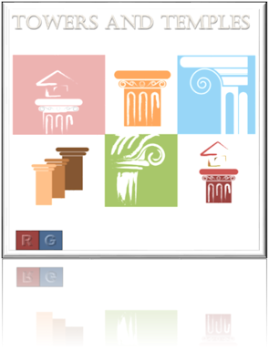

Review of Towers and Temples
Rule an Ancient City
Towers and Temples is the winner of the 2017 Palmer Medal for Best New Simulation Board Game. Players adopt role cards of characters from ancient Greece and Rome in an attempt to manage the administration of a city. Each role provides a different ability and strategy. However, one role card belongs to a deadly assassin and players must be constantly aware of betrayal and double-crosses. This card game provides a ton of enjoyment and can handle up to eight players and expansion packs available for larger parties.
This is a nicely balanced game, where each player must carefully choose his or her roles and the strategies can quickly change with the turn of a card. However, the level of randomness is just right and cunning and resourcefulness can overcome bad luck (if given time). I do not recommend this game unless there are at least 4 players; less than that reduces the intrigue and some of the game appeal.
- Entertainment (8/10)
- Strategy (9/10)
- Innovation (7/10)
- Art Work (6/10)
- Community Enjoyment (10/10)
- Ease of Set Up (9/10)
- Play Again (10/10)
- OVERALL (8.43/10)
Highly Recommended
Towers and Temples is a great game. The balance is just about perfect and each player must carefully choose roles each turn. Even though the strategic possibilities are nearly endless, the game is simple to learn. The replay value is high and gets even better when you replace some of the cards with new cards available in the expansion packs.
Great Strategic Board Game
We tested Towers and Temples with everything from 2 to 6 players and we can strongly recommend the game. The different phases of the game are interesting and intriguing, from bluffing and stealing to site construction and planning. With the variety of cards and scenarios, no two games are ever quite the same. It's a great introduction to the world of strategic board games and role playing.
An Incredible Game
The artwork on the cards and the board is excellent and one of the best around. As for play, this game offers lots of strategy, and there are tough decisions to make every turn. It's not only important to select the character that increases your chances for scoring, but also to anticipate the characters the opponents are likely to select, and then hedge against their availability. This causes a lot of unpredictability and deep strategic thinking. However, it can still be played at a more basic level for younger users.